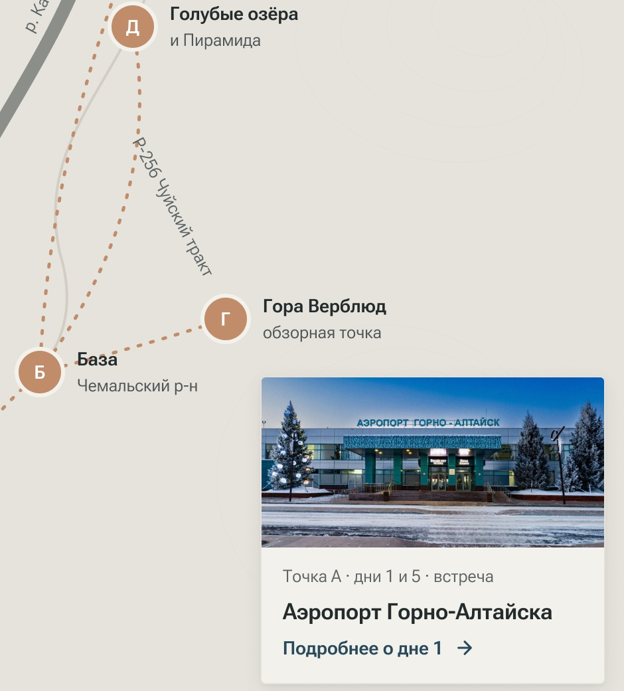
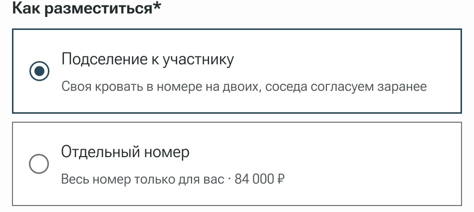
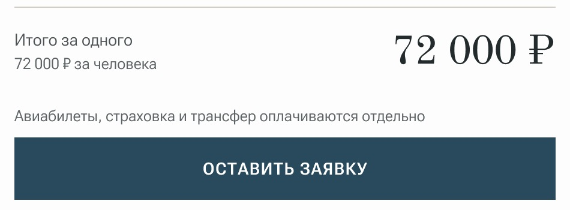
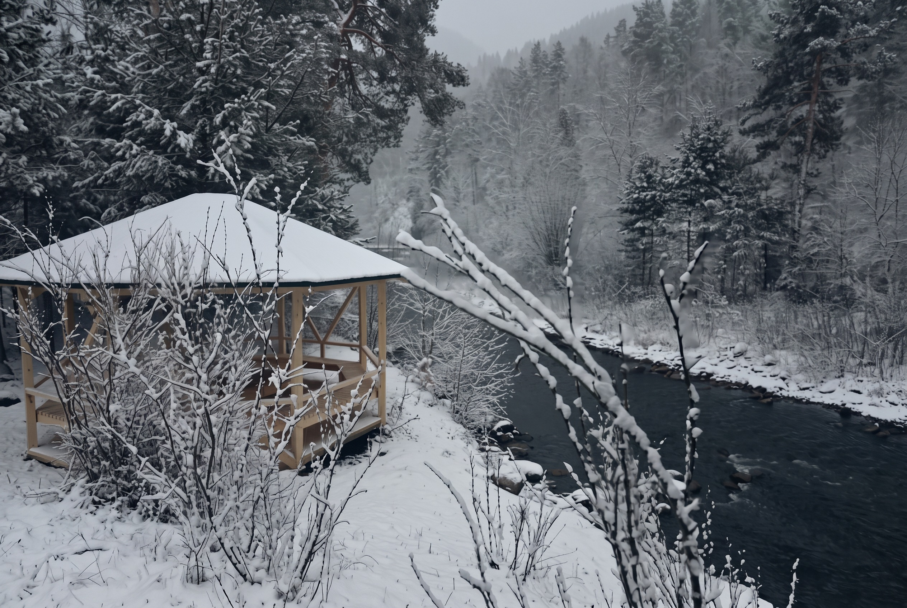
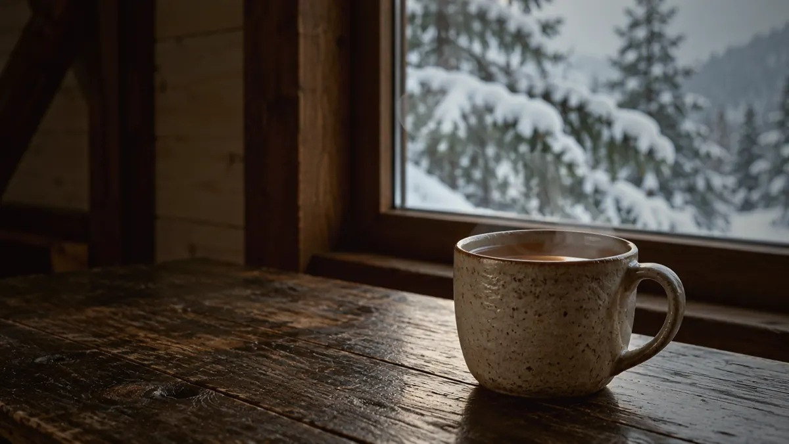
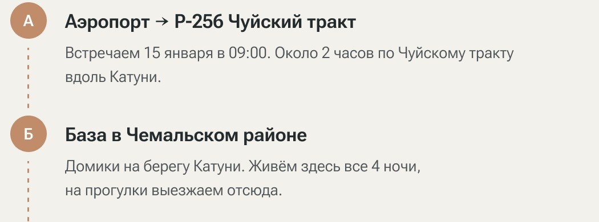
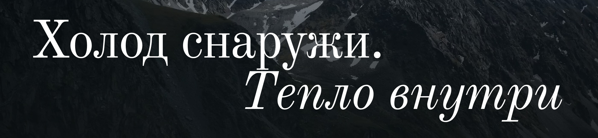

Three principles,
one visual language.
Rooted in the original 2024 concept, ALTAI’s visual language brings together two temperatures, atmospheric photography and editorial restraint.
01
Two temperatures
Warm tones guide the route. Cool blue highlights choices and actions. Neutral surfaces let both breathe.
Warm accent
Route and map points
Cool accent
Primary actions and selected states
Neutral surface
Content and visual balance

Live site · Map


Live site · Booking form

02
Photographic atmosphere
Muted colours, natural textures and generous imagery let the landscape set the mood.

Live site · Film & photos
03
Editorial calm
Old Standard TT sets the emotional tone. Roboto Flex keeps the interface clear and functional.

Roboto Flex · labels, body, routes · Live site, map section

Old Standard TT · Regular and Italic · Live site, hero